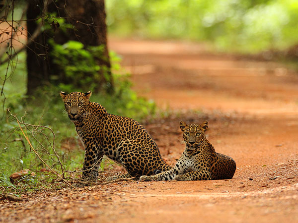
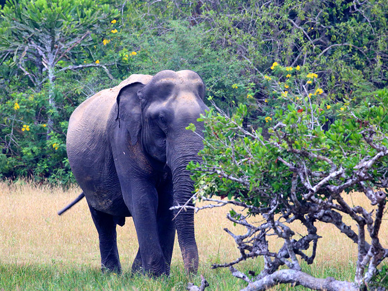
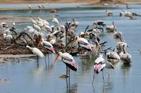

| National park |
Animal name |
Interesting fact |
1mage |
| Horton Plains |
Sambar Deer |
Large male Sambar deers weight up to 270–280 kg. |
 |
| Sinharaja Forest |
Leopard |
The Sri Lankan leopard hunts by silently stalking its prey, until it is within striking distance, when it unleashes a burst of speed to quickly pursue and pounce on its victim. |
 |
| Wasgamuwa National Park |
Elephant |
The elephants at Wasgamuwa are quite different to the ones at the other National Parks. They are completely wild and have limited exposure to safari jeeps |
 |
| Minneriya National park |
Birds |
There are large number of water birds such as Lesser adjutant, Painted stork and Spot-billed pelican in addition to resident and migratory bird species totaling to 160. |
 |